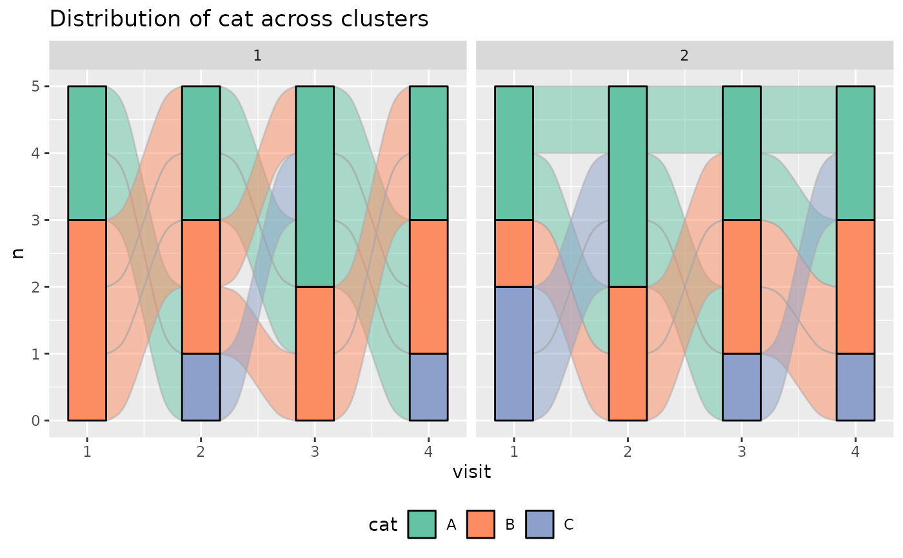

A helper function to plot alluvial plots of a categorical variable separated
by the clusters found by longmixr. You need to have
ggalluvial installed to use this function.
Arguments
- model
model
lccobject (output fromlongitudinal_consensus_cluster)- data
a
data.framethat contains the variables to be plotted and the time and ID variable used in the longmixr clustering; typically the data used for the clustering- variable_name
name of the categorical variable to be plotted as character
- time_variable
the name of the variable that depicts the time point of the measurements
- number_of_clusters
the number of clusters that should be plotted, the default is
2
Examples
library(ggalluvial)
#> Loading required package: ggplot2
set.seed(5)
test_data <- data.frame(patient_id = rep(1:10, each = 4),
visit = rep(1:4, 10),
var_1 = c(rnorm(20, -1), rnorm(20, 3)) +
rep(seq(from = 0, to = 1.5, length.out = 4), 10),
var_2 = c(rnorm(20, 0.5, 1.5), rnorm(20, -2, 0.3)) +
rep(seq(from = 1.5, to = 0, length.out = 4), 10))
model_list <- list(flexmix::FLXMRmgcv(as.formula("var_1 ~ .")),
flexmix::FLXMRmgcv(as.formula("var_2 ~ .")))
clustering <- longitudinal_consensus_cluster(
data = test_data,
id_column = "patient_id",
max_k = 2,
reps = 3,
model_list = model_list,
flexmix_formula = as.formula("~s(visit, k = 4) | patient_id"))
#> 2 : *
#> 2 : *
#> 2 : *
# add categorical variable for test plotting
test_data$cat <- sample(LETTERS[1:3], 40, replace = TRUE)
plot_alluvial(
model = clustering,
data = test_data,
variable_name = "cat",
time_variable = "visit"
)
